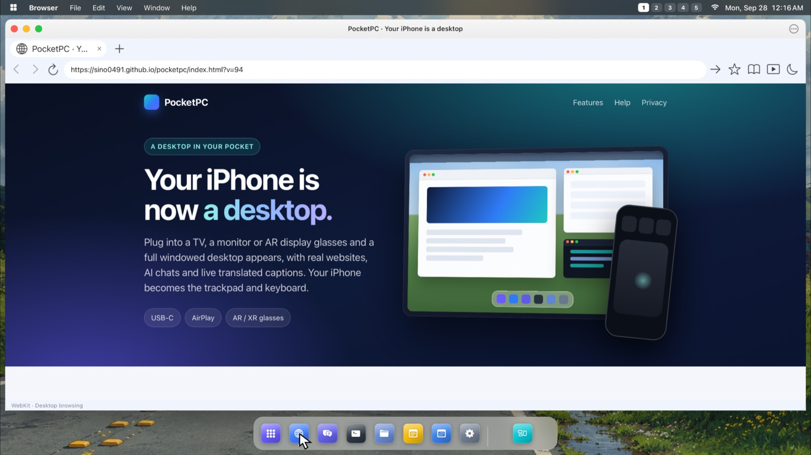
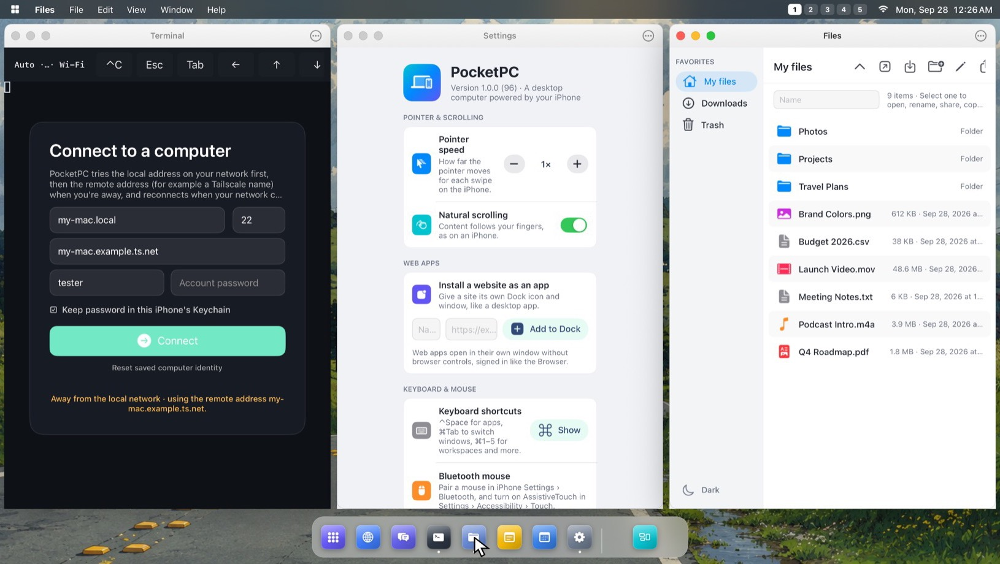
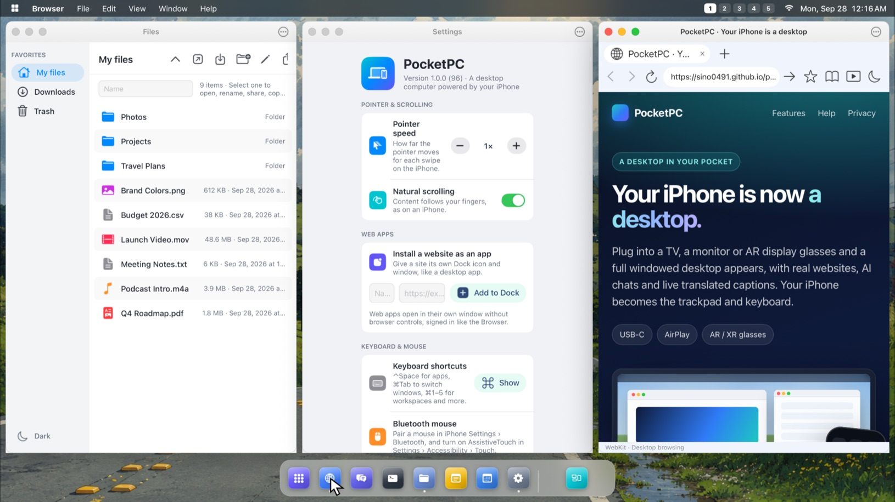

Connect a TV, a monitor or AR/XR display glasses, and a full windowed desktop appears on the big screen. Your iPhone becomes the trackpad and keyboard. No laptop required.
Your desktop appears on a TV, monitor or display glasses, and this iPhone becomes its trackpad and keyboard.
AirPlayUSB-C
1 / 7
Watch the tour, or take over any time.
Drag on the iPhone to move the pointer, tap to click, two fingers to scroll. Or click anything on the display.
Five workspacesSnap and tile windowsDesktop websitesAI chats side by sideLive TranslationAI NotesWalking DirectionsFiles · Terminal · Settings720p glasses to 4K TVsUSB-C and AirPlayNo accounts · no ads · no trackingOne-time purchase
Your iPhone is already a powerful computer. It goes everywhere you do, and it connects to the screens around you. All it was missing was a desktop. PocketPC gives it one.
More than mirroring
Not a mirror. A desktop.
On its own, mirroring shows a copy of your iPhone screen with black bars on each side. PocketPC turns the whole display into a desktop at its full resolution.
9:41●●●
example.com

MirroringPocketPC
MirroringA small copy of your phone screen.
PocketPCWindows, a Dock and desktop websites at the display's full resolution.
Features
Everything on the big screen. Powered by your iPhone.
A real windowed desktop with desktop websites and built-in apps. It runs entirely on your iPhone.
A real desktop
Windows that snap, a Dock, and five workspaces.
Resizable, snappable windows that open and close with smooth animations
A menu bar, a Dock with running apps, an app grid and five workspaces
Keyboard shortcuts, full-screen apps and a window overview
4K
TVs
Crisp text
Your display's full resolution.
From 720p glasses to 4K TVs, text stays sharp.
Desktop web browsing
Full websites, not mobile pages.
Tabs, find on page and downloads
Fill saved sign-ins with iOS Passwords
Turn any website into its own app with a Dock icon and window
Chat 1
Chat 2
Chat 3
AI chats in one window
The assistants you already use, side by side.
The AI assistants you use on the web, in one window, plus any others you add
Sign in on each service's own website and switch conversations without losing your place
Copy
Paste
Select All
Move · one finger
Trackpad and keyboard
Your iPhone is the trackpad.
Tap to click, scroll with two fingers, and two-finger click for copy and paste. Type with the iPhone keyboard.
⌘1–5
Switch workspaces
Keyboard shortcuts
Shortcuts for everything.
Pair a Bluetooth keyboard and mouse for shortcuts to apps, windows and workspaces.
Video on the big screen
Full screen, even when your iPhone locks.
Video plays full screen on the display, and can keep playing when your iPhone locks.
Built-in apps
Files, Terminal, Settings and Sound.
Files
Browse, import, organize and preview your files.
Private by design
PocketPC collects no data.
Speech is transcribed and translated on your iPhone.
No accountsNo adsNo tracking
The real thing
Not a render. A real capture.
PocketPC 1.0 on an external display: Terminal, Settings and Files, side by side.

Captured from the external display. The iPhone is the trackpad.
Made for AR / XR display glasses
A heads-up display for the world around you.
Smart Glasses mode turns your glasses into a see-through heads-up display, so you can keep your phone in your pocket.
What you see through the glasses
Glasses show black as clear, so only the bright text floats in your view. Move your pointer to look around. Content shown is a sample.
Connect
One iPhone. Every screen.
Plug in by USB-C or connect with AirPlay. The desktop appears at the display's full resolution.

1080pUSB-C
AR / XR display glasses
A big screen that only you can see.
Plug in display glasses that accept video over USB-C. Use the full desktop, or switch to Smart Glasses for a see-through heads-up display.
Monitors
A desk setup, minus the laptop.
Connect a USB-C monitor directly, or an HDMI monitor with a compatible video adapter. Pair a Bluetooth keyboard and mouse for a full workstation.
TVs and AirPlay
The biggest screen in the room.
Use Screen Mirroring to an Apple TV, AirPlay TV or Mac, or connect a TV with a USB-C video adapter. Tip: set the Action Button to the Screen Mirroring control to connect with one press.
1
Connect a display
Plug in by USB-C, or choose a display with Screen Mirroring.
2
The desktop appears
At the display's best resolution, with your windows and Dock.
3
Your iPhone takes control
Move, click and scroll on the iPhone, and type with its keyboard.
Good to know
Glasses must accept video over USB-C (DisplayPort). Glasses with only a camera or speakers and no display aren't supported.
A cable connection needs an iPhone with USB-C, or a compatible video adapter.
The workspace runs websites and PocketPC's built-in tools. It doesn't run Mac apps or other installed iPhone apps.
AI Notes summaries need an iPhone with Apple Intelligence. Other iPhones still get the full transcript.
5workspaces
Slide between desktops.
4Kon TVs
From 720p glasses to 4K TVs.
0data collected
No accounts, ads or tracking.
1purchase
No subscriptions.
Private by design
PocketPC collects no data.
Speech is transcribed and translated on your iPhone. Websites you open are run by their owners, as in any browser.
Email sino0491@gmail.com with your iPhone model and iOS version. We usually reply within two business days.
Show the desktop on a display
AirPlay: open Control Center, tap Screen Mirroring and pick a compatible Apple TV, AirPlay TV or Mac. Tip: set the Action Button to the Screen Mirroring control to connect with one press.
Cable: connect a USB-C display, glasses or adapter. The desktop appears automatically at the display's best resolution.
Without a display, the iPhone shows how to connect, and Browse opens the web browser on the iPhone itself.
Use your iPhone as trackpad and keyboard
Move with one finger, tap to click, and scroll with two fingers.
Click with two fingers for copy, paste and more.
Tap Keyboard to type on the desktop. Bluetooth keyboards and mice work too.
Open apps from the Dock or the Apps button, and see every window with Windows.
Smart Glasses
Walking Directions: type a destination and pick a suggestion.
Live Translation: tap Start Translating to read a conversation in your language. Download languages ahead of time under Offline Languages.
AI Notes: Start Recording shows live captions and topics. Stop saves the note in Files. Set up the optional Save to Apple Notes shortcut in Controls to save there too.
Sound, sign-in and AI Chats
Tap Sound to choose where audio plays, such as AirPods or the display.
Sign in to websites as in Safari. Use iOS Passwords to fill sign-ins into the website.
AI Chats keeps web AI assistants in one window. PocketPC isn't affiliated with these services.
Privacy controls
The Privacy Policy, Acknowledgements and Clear Website Data are in Controls on the iPhone and in desktop Settings.
Clear Website Data closes webpages and removes cookies, cached website content and saved website sessions. Favorites and downloaded files stay.
Requirements
An iPhone with iOS 27 or later.
A display connected by USB-C or an adapter, or an Apple TV, AirPlay TV or Mac for Screen Mirroring.
Display glasses must accept video over USB-C (DisplayPort).
Put a desktop in your pocket.
One-time purchase. No subscriptions. For iPhone with iOS 27 or later.